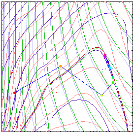

IOptlib.NET This page provides some
information about the Ioptlib.NET (Investigative
Optimization Library), a library based on IGLib. |
 |
| Contents: |
Search |
Currently the library is only available for personal
projects of its developer. Because there is no funding to support
library development, the developer is not able to maintain any
releases on a wider scale. This may change as the library is
further developed. For now, deals can be made for use of the
library in individual projects.
|
|
|
Maintained by Igor
Grešovnik
|
|
|